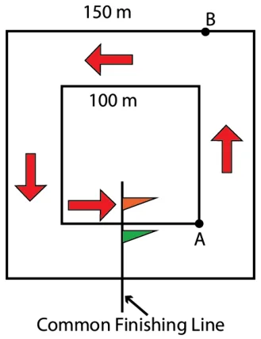
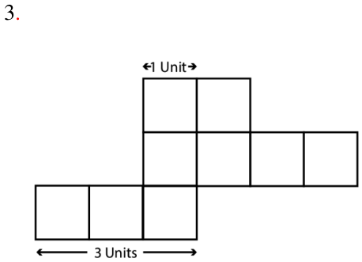

Perimeter and Area
Section 6.1
Page no. 132
Figure it Out
Q.1. Find the missing terms:
- Perimeter of a rectangle \(= 14\) cm; breadth \(= 2\) cm; length = ?
- Perimeter of a square \(= 20\) cm; side of a length = ?
- Perimeter of a rectangle \(= 12 m\); length \(= 3 m\); breadth = ? Ans. (a) length \(= 5\) cm
- length of a side \(= 5\) cm
- breadth \(= 3cm\)
Q.2. A rectangle having side lengths 5 cm and 3 cm is made using a piece of wire. If the
wire is straightened and then bent to form a square, what will be the length of a side of the square?
Ans. Length of a side of square \(= 4\) cm
Q.3. Find the length of the third side of a triangle having a perimeter of 55 cm and having
two sides of length 20 cm and 14 cm, respectively?
Ans. Length of the third side of triangle \(= 21\) cm
Q.4. What would be the cost of fencing a rectangular park whose length is 150 m and
breadth is 120 m, if the fence costs Rs.40 per metre?
Ans. \(P = 2 \times (150+120) = 540\); So, \(540 \times 40 =\) Rs. 21,600
Q.5. A piece of string is 36 cm long. What will be the length of each side, if it is used to
form:
- A square,
- A triangle with all sides of equal length, and
- A hexagon (a six sided closed figure) with sides of equal length? Ans. (a) Length of each side of square \(= 9\) cm
- Length of each side of regular triangle \(= 12\) cm
- Length of each side of regular hexagon \(= 6\) cm Q.6. A farmer has a rectangular field having length 230 m and breadth 160 m. He wants to fence it with 3 rounds of rope as shown. What is the total length of rope needed?
- 9 sq. m.
- 12 sq. units.
Page No. 145
Q. Using 9 unit squares, solve the following.
- What is the smallest perimeter possible?
- What is the largest perimeter possible?
- Make a figure with a perimeter of 18 units.
- Can you make other shaped figures for each of the above three perimeters, or is there only one shape with that perimeter?
What is your reasoning?
Ans. 1. The smallest possible perimeter is 12 cm obtained from a square of side 3 cm
- The largest possible perimeter is 20 cm. obtained from a rectangle of length 9 cm and breadth 1 cm.
- Yes, except for the smallest perimeter (12 sq. units).
Page No. 146
Q. Below is the house plan of Charan. It is in a rectangular plot. Look at the plan. What
do you notice?
Some of the measurements are given.
- Find the missing measurements.
- Find out the area of his house. Ans. a.
- Small bedroom \(15ft \times 12ft\)
Area \(= 180\) sq ft
- Utility \(15ft \times 3ft\)
Area \(= 45\) sq ft
- Hall \(20ft \times 12ft\)
Area \(= 240\) sq ft
- Parking \(15ft \times 3ft\)
Area \(= 45\) sq ft
- Garden \(20ft \times 3ft\)
Area \(= 60\) sq ft
- Area of his house \(= 35ft \times 30ft\)
=1050 sq ft
Page No. 147
Q. Now, find out the missing dimensions and area of Sharan’s home. Below is the plan: Some of the measurements are given.
- Find the missing measurements.
- Find out the area of his house.
What are the dimensions of all the different rooms in Sharan’s house? Compare the areas and perimeters of Sharan’s house and Charan’s house.
Ans. a. Dimensions of Sharan’s house.
- Utility \(7ft \times 10\) ft
Area \(= 70\) sq ft
- Hall \(23ft \times 15\) ft
Area \(= 345\) sq ft
- Entrance 7 ft \(\times 15ft\)
Area \(= 105\) sq ft
- Small bedroom \(12ft \times 10ft\)
Area \(= 120\) sq ft
- Toilet \(5ft \times 10\) ft
Area \(= 50\) sq ft
- Area of his house \(= 42\) ft \(\times 25\) ft
\(= 1050\) sq ft
Area of Charan’s house \(= 35ft \times 30\) ft \(= 1050\) sq ft
Area of Sharan’s house \(= 42\) ft \(\times 25ft = 1050\) sq ft
Area of both the houses are equal.
Now, Perimeter of Charan’s house \(= 130\) ft
Perimeter of Sharan’s house \(= 134\) ft
Perimeter of Sharan’s house is greater than the Perimeter of Charan’s house.
Page No. 148
Area Maze Puzzles
In each fig. find the missing value of either the length of the side or the area of the region.
Ans.
- 30 sq cm.
- 9 sq cm.
- 16 sq cm.
- 5 cm.
- The area of each rectangle is larger than the area of the square.
- The perimeter of the square is greater than the perimeters of both the rectangles added together.
- The perimeters of both the rectangles added together is always \(𝟏 \frac{𝟏}{𝟐}\) times the perimeter of the square.
- The area of the square is always three times as large as the areas of both rectangles added together.
Ans. Perimeter of the field \(= 780 m\)
Total length of the rope needed \(= 2340 m\)
Section 6.1
Page No. 133
Figure it out
Q.1. Find out the total distance Akshi has covered in 5 rounds.
Ans. Perimeter of the outer track \(= 220 m\)
Total distance Akshi has covered in 5 rounds \(= 1100 m\)
Q.2. Find out the total distance Toshi has covered in 7 rounds. Who ran a longer distance?
Ans. Perimeter of the inner track \(= 180 m\)
Total distance Toshi has covered in 7 rounds \(= 1260 m\)
Toshi ran longer distance
Deep Dive

Page No. 134
Ans. From point A to flag: \(100 + 100 + 100 + 50\)
\(= 350 m\)
From point B to flag: \(125 + 150 + 75\)
\(= 350 m\)
Section 6.1
Page no. 134
Q. Akshi says that the perimeter of this triangle shape is 9 units. Toshi says it can’t be 9 units and the perimeter will be more than 9 units. What do you think?
Ans. The perimeter will be more than 9 units as the length of a diagonal of a square is always
greater than the sides of the square.
P.135
Q. Write the perimeters of the figures below in terms of straight and diagonal units.
Ans. The perimeters of the figures: \(8s + 2d\), \(4s + 6d\), \(12s + 6d\), \(18s + 6d\).
Q. Find various objects from your surroundings that have regular shapes and find their perimeters. Also, generalise your understanding for the perimeter of other regular polygons.
Ans. In general perimeter of regular polygons = Number of sides \(\times\) Length of a side.
Section 6.2
Page No. 138
Figure it out
Q.1. The area of a rectangular garden 25 m long is 300 sq m. What is the width of the
garden?
Ans. Width of the garden \(= 300\) \(25 = 12 m\).
Q.2. What is the cost of tiling a rectangular plot of land 500 m long and 200 m wide at the
rate of Rs.8 per hundred sq. m?
Ans. Cost of tiling = Rs. 8000
Q.3. A rectangular coconut grove is 100 m long and 50 m wide. If each coconut tree
requires 25 sq m, what is the maximum number of trees that can be planted in this grove?
Ans. 200.
Q.4. By splitting the following figures into rectangles, find their areas (all measures are
given in meters):
Ans. (a) 28 sq. m.
Page No. 140
Q. Find the area of the following figures.
Ans. 4 sq. units, 9 sq. units, 10 sq. units, 11 sq. units.
Let’s Explore!
Page No. 141
Section 6.3
Figure it Out
Page No. 144
Q.1. Find the areas of the figures below by dividing them into rectangles.
Ans. a. 24 sq. units. b. 30 sq. units. c. 48 sq. units d. 16 sq. units

Section 6.3
Page No. 149
Figure it Out
Q.1. Give the dimensions of a rectangle whose area is the sum of the areas of these two
rectangles having measurements: \(5 m \times 10 m\) and \(2 m \times 7 m\).
Ans. Possible dimensions are 16 m and 4 m Or 32 m and 2m Or 8 m and 8 m
Q.2. The area of a rectangular garden that is 50 m long is 1000 sq m. Find the width of
the garden?
Ans. 20 m.
Q.3. The floor of a room is 5 m long and 4 m wide. A square carpet whose sides are 3 m
in length is laid on the floor. Find the area that is not carpeted.
Ans. Area of floor not carpeted \(= 11\) sq. m.
Q.4. Four flower beds having sides 2 m long and 1 m wide are dug at the four corners of
a garden that is 15 m long and 12 m wide. How much area is now available for laying down a lawn?
Ans. Available area for lawn \(= 172\) sq. m.
Q.5. Shape A has an area of 18 square units and Shape B has an area of 20 square units.
Shape A has a longer perimeter than Shape B. Draw two such shapes satisfying the given conditions.
Ans. Possible dimensions of shape A are 6m and 3m; 2m and 9m; 18m and 1m
Corresponding Perimeters \(=18 m\), 22m, 38m respectively
Possible dimensions of shape B are 5m and 4m; 10m and 2m; 20m and 1m
Corresponding Perimeters =18m, 24m, 42m respectively
Given P(A) > P(B)
We may take P(A) \(= 22m\) or 38m and P(B) \(= 18 m\) and draw the figures accordingly.
Q.7. Draw a rectangle of size 12 units \(\times 8\) units. Draw another rectangle inside it, without
touching the outer rectangle that occupies exactly half the area.
Ans. Area of outer rectangle \(= 96\) sq. units.
Area of inner rectangle \(= 48\) sq. units.
Draw the rectangles accordingly.
Q.8. A square piece of paper is folded in half. The square is then cut into two rectangles
along the fold. Regardless of the size of the square, one of the following statements is always true. Which statement is true here?
Ans. Only C is true.